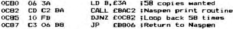
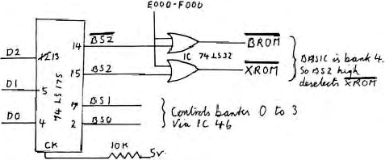

Micropower |
Volume 2 · Number 4 · September 1982 |
| Page 32 of 36 |
|---|
night typing articles into Wordease. Having struggled to produce the last one and a half issues I can admire him for managing to keep the magazine going for the last year. I hope that I can do as well.
This note came from Mr. S. Stubbs of Inverurie, Aberdeenshire.
One of the more obvious ommissions in Naspen is the ability to print multiple copies of the same thing, without having to press ‘P’ every time. I produce about 100 copies of a 3000 Word club newsletter every month so I use the following piece of relocateable code which holds in B the number (in hex) of copies required and calls the print routine in Naspen through a loop. The code can go anywhere except in Naspen workspace. I use 0C80 hex.

To use, just enter this code having set the second byte for the number of copies in hex (up to 255 of FF hex) and execute at the address loaded. Ensure that when you exit from Naspen you leave the cursor pointing at the first character to be printed or use the ‘Z’ command before leaving if you want the whole text file printing. As the loop executes, you will see ‘completed’ printed on the screen after every copy. This because it is within the print routine in Naspen and before the RETurn command.
Mr. A. Want spotted this error in a drawing in Volume 2, Number 2 in the 2732 EPROM article. D2 going into the 74LS175 has been assigned to pin 12 in the diagram but should be assigned to pin 13 to work.
| Page 32 of 36 |
|---|